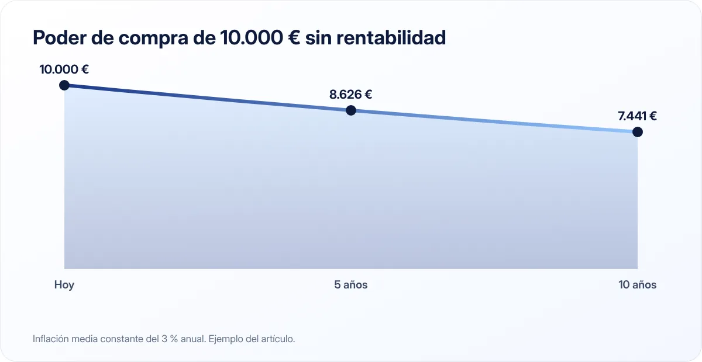

Qué es la inflación y cómo afecta a tus ahorros
Si tus ahorros están quietos en una cuenta sin remunerar, cada año compran un poco menos. Eso es la inflación, y entenderla te ayuda a decidir dónde guardar tu dinero.

Puntos clave
- La inflación es la subida generalizada de precios; en España se mide con el IPC del INE.
- Con una inflación del 4,9 % (dato de septiembre de 2026), 10.000 € pierden en un año el poder de compra de unos 470 €.
- Combátela con cuentas remuneradas a corto plazo y, a largo plazo, con inversión diversificada.
Qué es la inflación
La inflación es el aumento generalizado y sostenido de los precios de bienes y servicios. Cuando hay inflación, con el mismo dinero puedes comprar menos cosas que antes.
Si una cesta de la compra cuesta hoy 100 € y la inflación anual es del 3 %, dentro de un año esa misma cesta costará unos 103 €. Tus 100 € seguirán siendo 100 €, pero ya no te llegarán para lo mismo.
Cómo se mide en España
El Instituto Nacional de Estadística (INE) publica cada mes el Índice de Precios de Consumo (IPC), que mide la evolución de los precios de una cesta representativa de lo que consumen los hogares: alimentos, vivienda, transporte, ocio, etc.
La cifra que suele aparecer en las noticias es la tasa anual: cuánto han subido los precios respecto al mismo mes del año anterior. Según el INE, en septiembre de 2026 la tasa anual del IPC general fue del 4,9 %, seis décimas más que en agosto (4,3 %).
Ten en cuenta que es una media: tu inflación personal puede ser mayor o menor según en qué gastes tu dinero. Si una gran parte de tu presupuesto se va en alquiler o alimentación y esos precios suben más que la media, la notarás más.
Cómo afecta a tus ahorros

Lo que importa no es cuánto dinero tienes, sino qué puedes comprar con él. Es lo que se llama poder adquisitivo.
| Situación | Valor nominal al cabo de un año | Poder de compra aproximado |
|---|---|---|
| 10.000 € en cuenta sin intereses, inflación 4,9 % | 10.000 € | ≈ 9.533 € |
| 10.000 € al 2 %, inflación 4,9 % | 10.200 € | ≈ 9.724 € |
Incluso si tu cuenta te paga un interés, si es menor que la inflación estás perdiendo poder adquisitivo. La diferencia entre la rentabilidad y la inflación se llama rentabilidad real.
El efecto se acumula. Con una inflación media del 3 % durante 10 años, 10.000 € guardados sin rentabilidad tendrían un poder de compra equivalente a unos 7.441 € de hoy.
Por qué existe la inflación
Las causas pueden ser varias: aumento de la demanda, subida de costes (energía, materias primas), salarios, expectativas… El Banco Central Europeo tiene como objetivo mantener la inflación de la zona euro en torno al 2 % a medio plazo, y para ello usa herramientas como los tipos de interés. Cuando la inflación se dispara, suele subir los tipos; cuando está por debajo del objetivo, suele bajarlos.
Qué puedes hacer
1. No dejes todo el dinero en una cuenta sin remunerar
Mantén en la cuenta corriente lo necesario para el mes. Tu fondo de emergencia puede estar en una cuenta remunerada o depósito que al menos reduzca la pérdida.
2. Para el largo plazo, valora invertir
Históricamente, la inversión diversificada en bolsa ha ofrecido rentabilidades superiores a la inflación en periodos largos, aunque con caídas importantes por el camino y sin garantía de que el futuro se parezca al pasado. Si te interesa, empieza por entender los fondos indexados y sus riesgos.
3. Revisa tus gastos fijos
Cuando todo sube, es el mejor momento para revisar suscripciones, seguros y recibos de luz o telefonía.
4. Actualiza tu presupuesto
Si los precios suben y tus ingresos no, tu presupuesto mensual de hace un año probablemente ya no es realista. Revísalo.
5. Ten en cuenta la inflación al negociar tu sueldo
Una subida salarial del 2 % con una inflación del 4,9 % es, en términos reales, una bajada de poder adquisitivo.
La inflación no se nota de un mes para otro, pero año a año erosiona el valor de lo que tienes ahorrado. Que tu dinero trabaje, aunque sea un poco, es la mejor defensa.
¿Y la deflación?
Es lo contrario: una bajada generalizada de precios. Aunque pueda parecer buena noticia, cuando es prolongada suele asociarse a economías débiles, porque consumidores y empresas retrasan compras e inversiones esperando precios aún más bajos.
En resumen
La inflación reduce lo que puedes comprar con tu dinero. Consulta el IPC del INE para conocer el dato actual, no dejes tus ahorros sin remunerar, revisa tus gastos y, para objetivos lejanos, infórmate sobre inversión a largo plazo entendiendo sus riesgos.
Fuentes consultadas
Este artículo es informativo y no constituye asesoramiento financiero, fiscal ni jurídico personalizado. Las cifras son orientativas y pueden cambiar; consulta las fuentes oficiales y, si lo necesitas, a un profesional. Cómo elaboramos nuestras guías.